AnyPortrait > マニュアル > 最終回転補正
スケルタルアニメーションは、いくつかの処理工程を経て実行されます。
これらの処理工程は、物理効果のような特殊な演算を除けば、大きく「FK」と「IK」の演算段階に分けられます。
まずFKによるアニメーションデータが演算され、その後にIKオプションによってモーションが補正されますが、この際、意図しない結果が生じることがあります。
特に、IKによって動かされたボーンの向きが、FKの状態に比べて大きく変化してしまう場合があります。
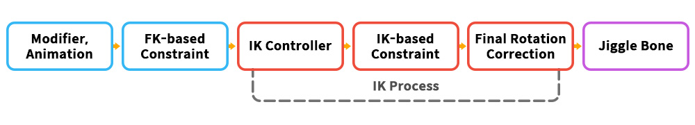
この問題を解決するために、「AnyPortrait v1.7.0」では「最終回転補正 (Final Rotation Correction)」というステップが追加されました。
「最終回転補正」はIK処理の最後で動作し、IK処理段階におけるボーンの回転角度を補正する役割を担います。
このページでは、「最終回転補正」を適用する手順とオプションについて解説します。
また、「ボーンコンストレイント (Bone Constraint)」を併用する例も紹介します。
メモ
このページをお読みになる前に、IKに関する以下のマニュアルを先にお読みいただくことをお勧めします。
- IK設定
- IKコントローラ
- ボーンコンストレイント
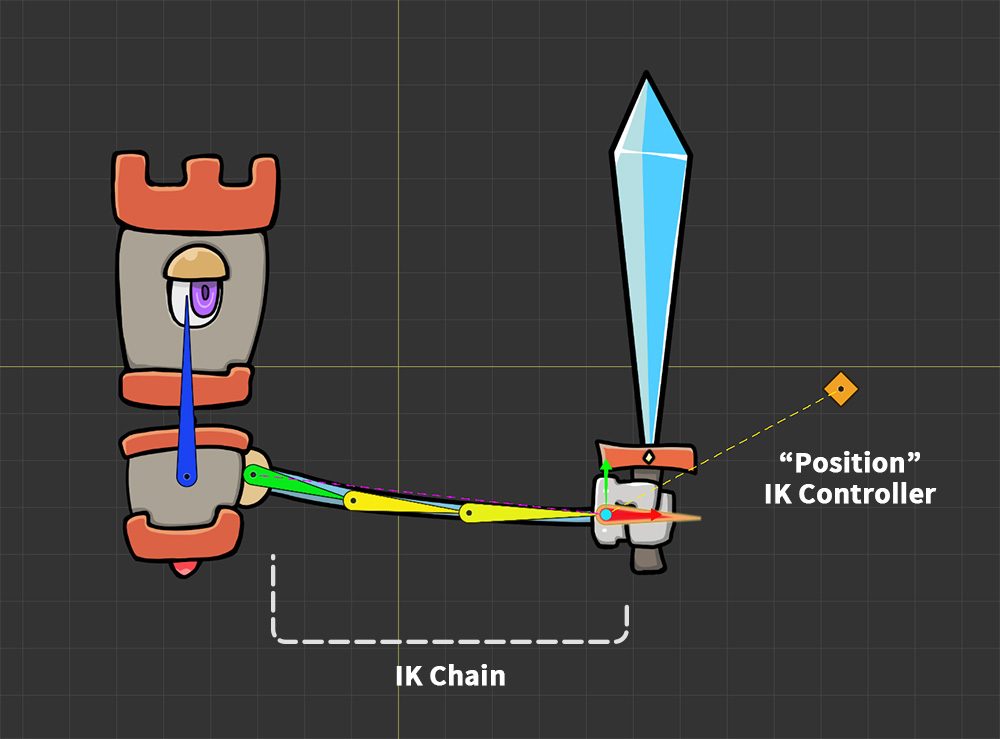
ロボットが剣を振るう例を用意してみました。
「最終回転補正」の効果を確認するには、IK機能を利用する必要があります。
上記のようにIKチェーンを設定した後、「Position」タイプのIKコントローラーを設定します。
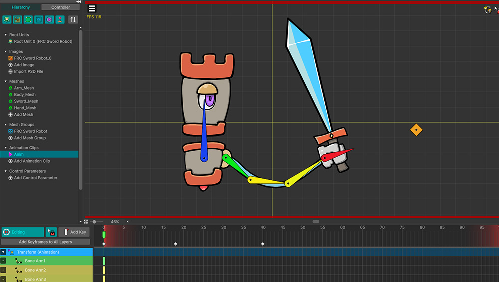
ロボットが剣を構えている姿勢のアニメーションを作成します。
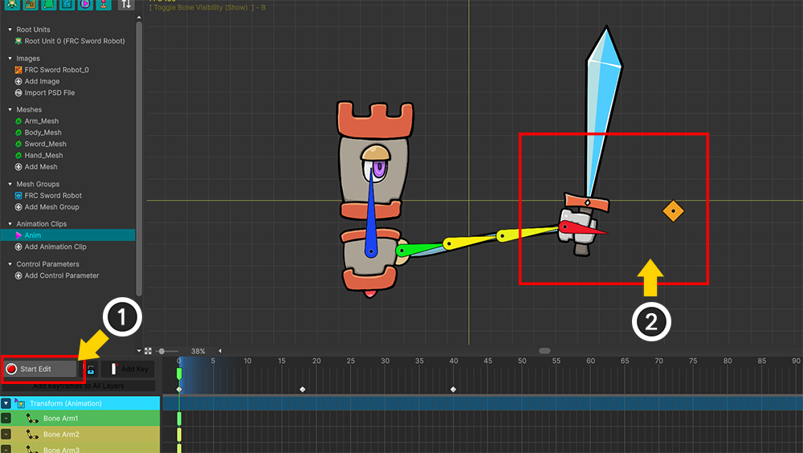
(1) 「編集モード」をオフにすると、(2) IKコントローラーが動作し、ロボットの腕が目標に向くようになります。
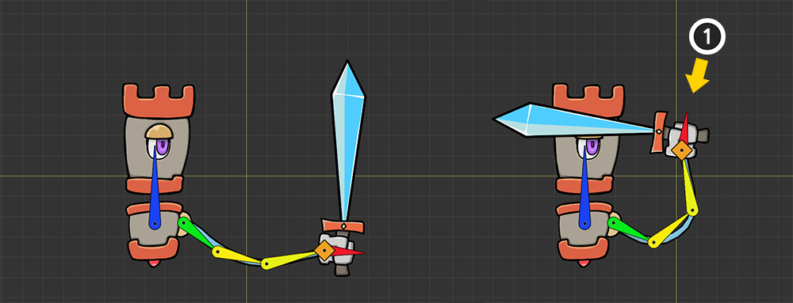
こうすることで、IKコントローラーの「Effector Bone」を使って簡単にアニメーションを作成できます。
(1) 「Effector Bone」の位置によっては、剣がロボットの顔の方を向いてしまうような、不自然な姿勢になることもあります。
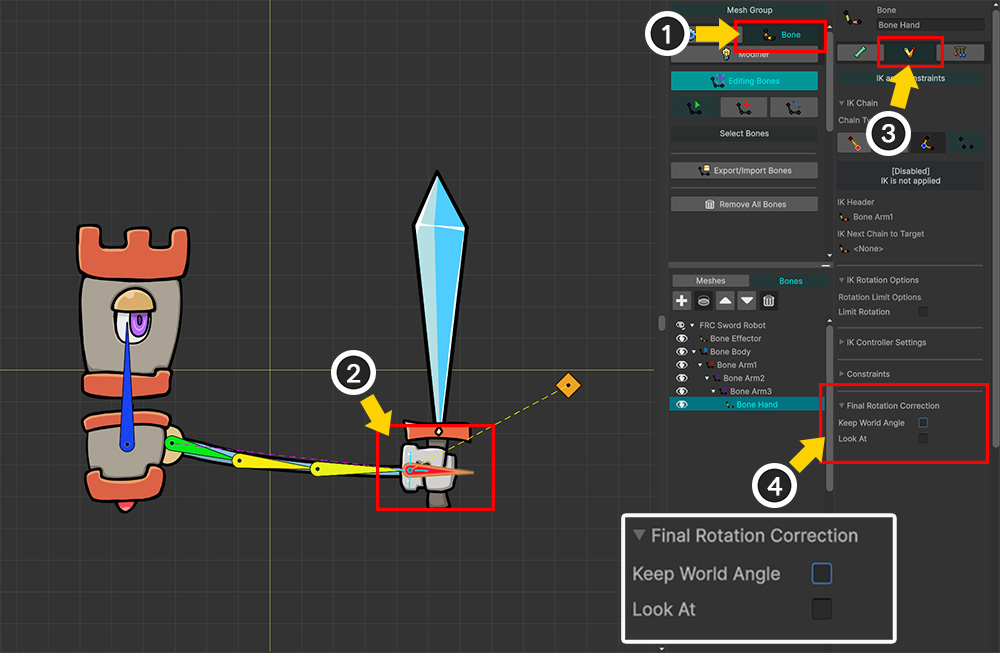
この問題を解決するために、「最終回転補正」を適用してみましょう。
(1) メッシュグループ編集画面で、「Bone」タブを選択します。
(2) IKコントローラーが適用されたボーンを選択します。
(3) 「IK and Constraints」タブを選択します。
(4) 「Final Rotation Correction」の項目とオプションが表示されます。
これらのオプションは以下の通りです。
1. Keep World Angle : FKで編集されたワールド座標系におけるボーンの回転角度を保持し、IK演算の最後に再適用します。
2. Look At : IK演算の最後に、別のボーンの方を向くように回転します。
「Keep World Angle」オプションと「Look At」オプションは、同時に設定可能です。
両方のオプションが有効な場合、まず「Keep World Angle」が適用され、続いて「Look At」が適用されます。
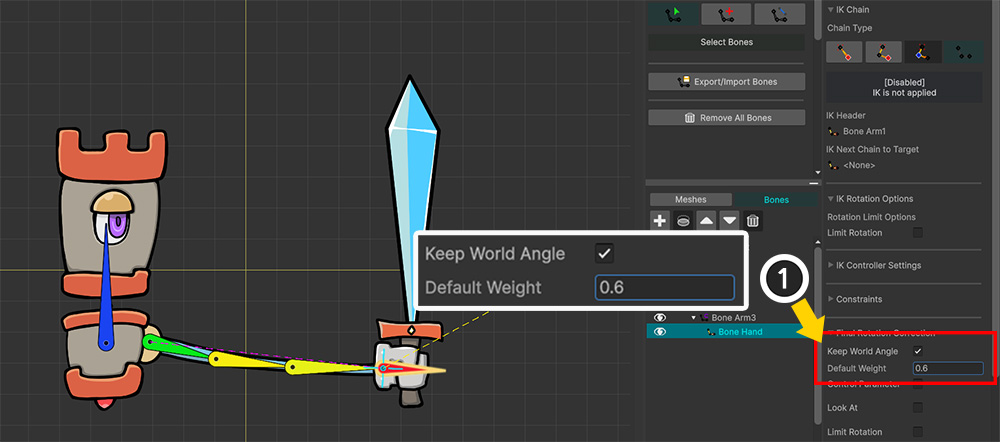
まず、「Keep World Angle」を適用してみましょう。
(1) 「Keep World Angle」を有効にします。
(2) 「Default Weight」は、補正が適用される度合いです。ここでは少しだけ適用してみるために、「0.6」と入力してみました。
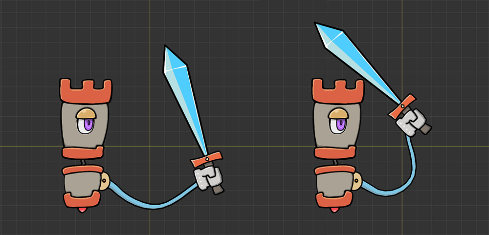
改めてアニメーションを再生してみると、上記のように、剣を握った手の回転が抑えられ、顔の方を向かないようになりました。
「Keep World Angle」オプションはFKでの角度を維持するため、キーフレームで設定したポーズがIKの結果に反映されるのです。
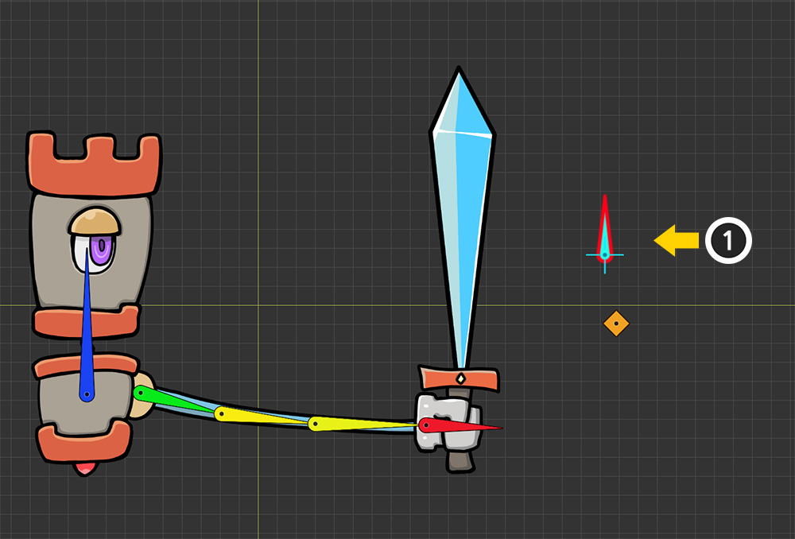
次に、「Keep World Angle」の代わりに「Look At」オプションを使ってみましょう。
(1) 「Look At」の対象となるボーンを追加します。
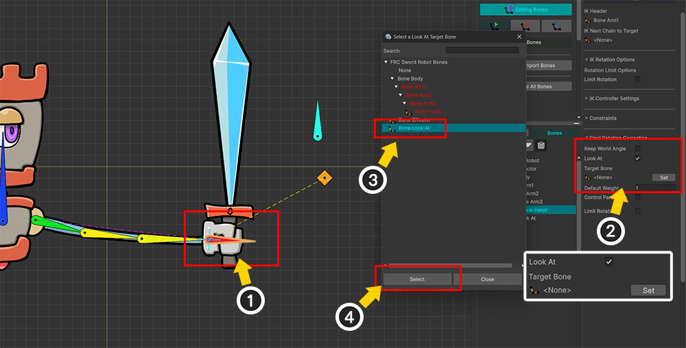
(1) IKコントローラーが適用されたボーンを選択します。
(2) 「Look At」を有効にし、「Set」ボタンを押します。
(3) 先ほど追加したボーンを選択します。
(4) 「Select」ボタンを押します。
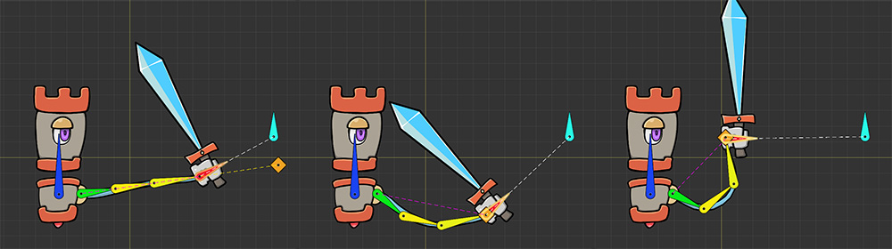
アニメーションを再生してみましょう。
今回は、手がIKコントローラーとは無関係に、追加されたボーンの方を向き続けているのが確認できます。
「Look At」オプションは、補正する角度を指定するために外部のボーンを利用するもので、ボーンの向きを固定する場合に効果的です。
「Look At」オプションは、「Look At IKコントローラ」と同様に動作します。
特に、IKチェーンを使用せずボーン単独で回転させる場合、その結果はほぼ同じになります。
結果は似ていますが、サポートされている詳細オプションや処理順序の違いを考慮し、適切な機能を選択して使用してみてください。
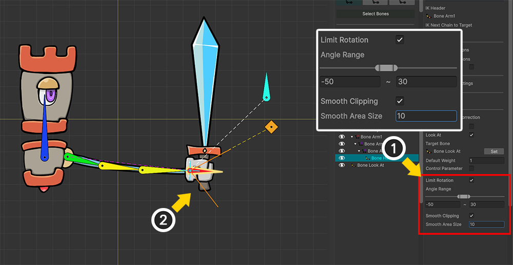
他のオプションも見てみましょう。
「Limit Rotation」オプションは、「Keep World Angle」または「Look At」のいずれかが有効になると表示されます。
このオプションは、ボーンの回転角度の範囲を制限します。
「Smooth Clipping」オプションを有効にすると、「Smooth Area Size」の値の分だけ制限範囲が緩和され、ボーンの回転が滑らかに制限されるようになります。
作業スペース上で、制限される角度の範囲を確認できます。
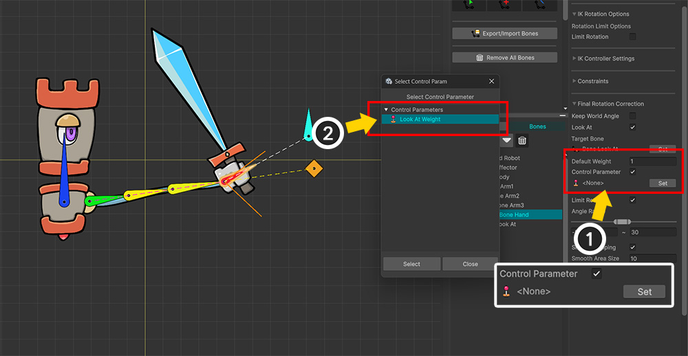
「Keep World Angle」や「Look At」に対して、それぞれ重みを指定できます。
特に「Float」型の「制御パラメータ」を接続すれば、リアルタイムで「最終回転補正」の適用度合いを変更することが可能です。
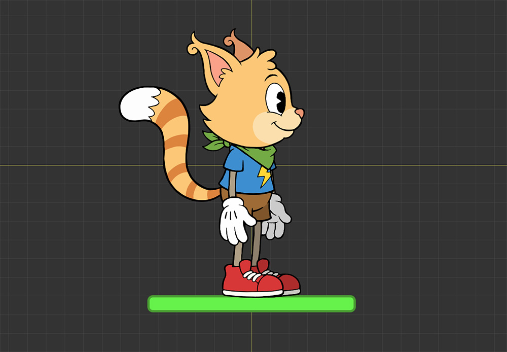
今回はIKコントローラーの代わりに、「ボーンコンストレイント」を併用してみましょう。
上のように、2Dゲームに出てきそうな可愛らしいキャラクターを用意しました。
キャラクターの足元には、「地面」を意味する緑色のボックスを追加しました。
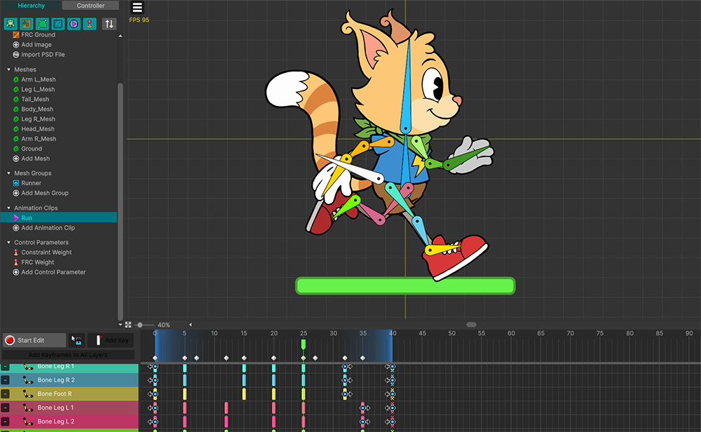
ボーンを追加して、キャラクターの「走り」のアニメーションを上記のように作成しました。
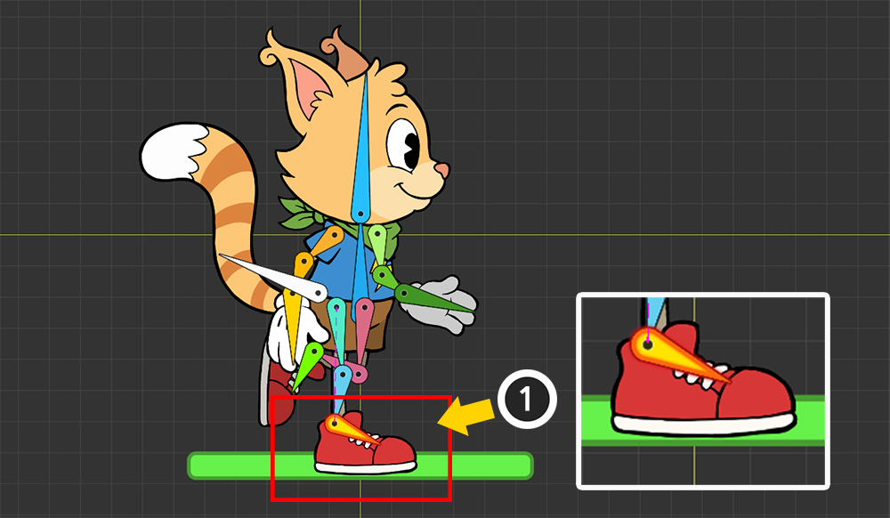
しかし、キャラクターの足が地面よりも下に入り込んでしまう瞬間が見受けられます。
キーフレームアニメーションを使ってこの問題を解決するには、キャラクターの足の位置をフレームごとに指定する必要があるでしょう。
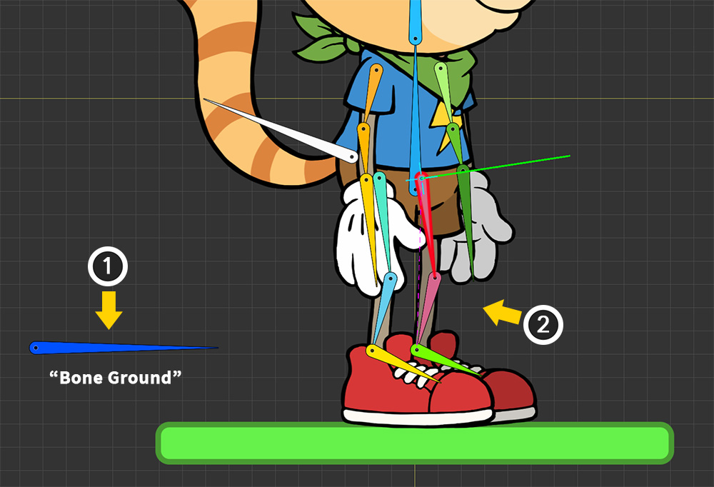
しかし、コンストレイントとIKを利用すれば、この問題を簡単に解決できます。
(1) 地面のY位置に相当する「Bone Ground」という名前のボーンを作成します。
(2) キャラクターの脚のボーンに「IKチェーン」を設定します。
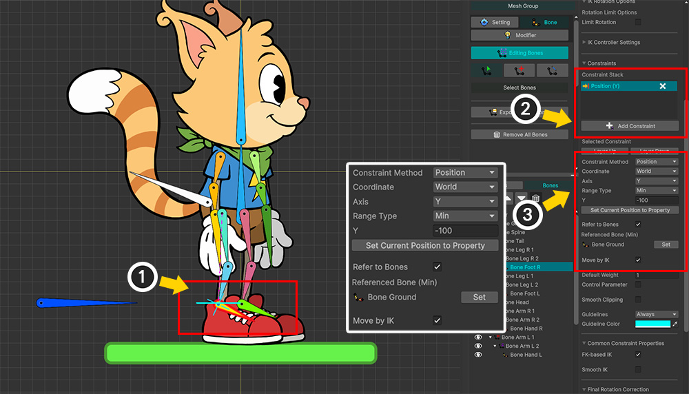
(1) キャラクターの足に該当するボーンを選択します。
(2) 「コンストレイント」を追加します。
(3) 上の画像のようにコンストレイントを設定し、キャラクターの足が「Bone Ground」より上側に位置するようにします。
- Constraint Method : Position
- Coordinate : World
- Axis : Y
- Range Type : Min
- Refer to Bones : オン、「Bone Ground」を対象
- Move by IK : オン
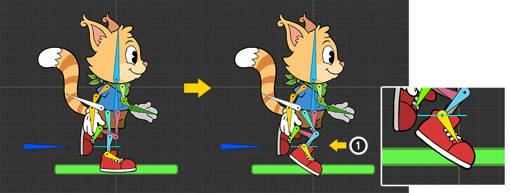
これでアニメーションを再生すると、キャラクターの足が「Bone Ground」より下には下がらないことが確認できます。
こうすることで、ひとまずキャラクターの足が地面に埋まってしまうのを防ぐことができます。
(1) しかし、足の向きは下を向いたままなので、まだ少し不自然に見えます。
コンストレイントによってIKが動作しましたが、IKの結果としてキャラクターの足の角度までは制御されなかったため、このような結果になったのです。
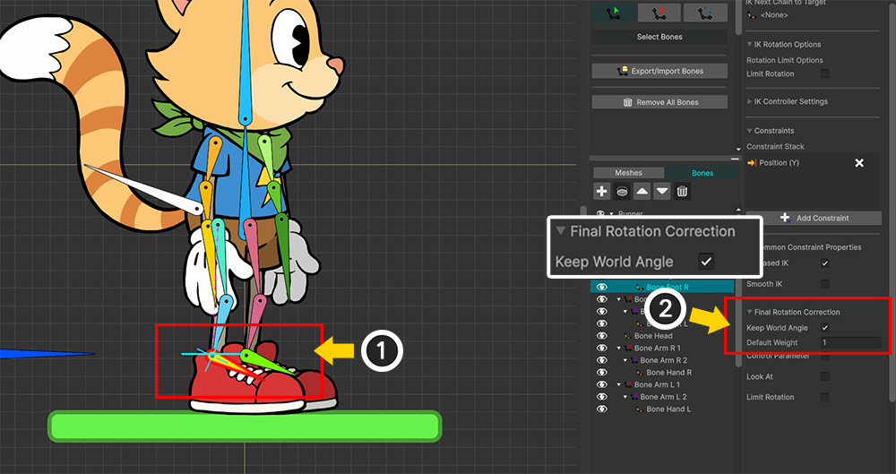
再びメッシュグループ編集画面に戻り、「最終回転補正」を適用します。
(1) コンストレイントを適用したボーンを選択します。
(2) 「最終回転補正」の「Keep World Angle」オプションを有効にします。
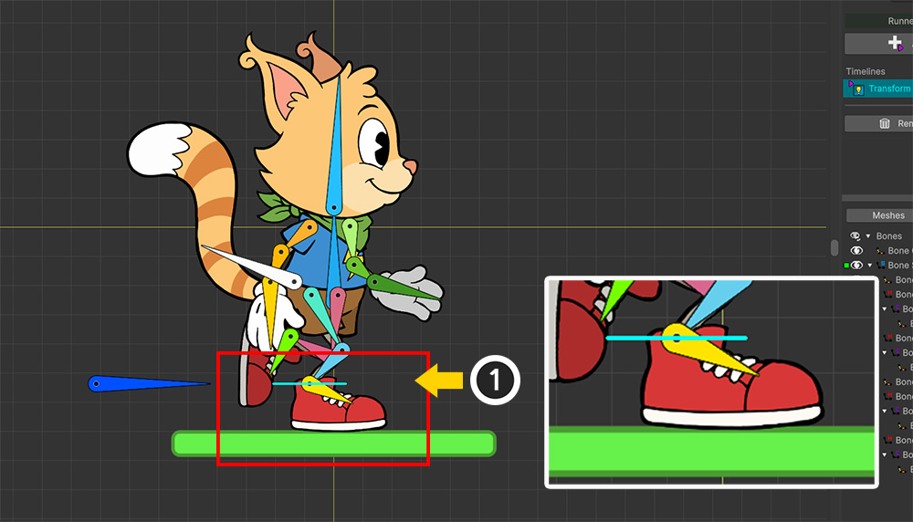
これで、キャラクターの足の角度が自然になりました。
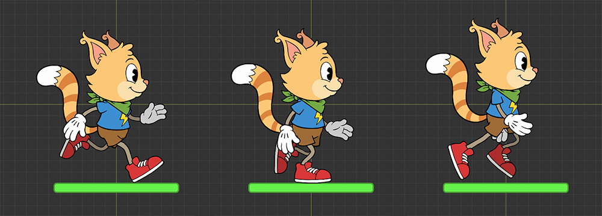
より自然に地面を蹴って走るアニメーションを完成させました。
このページでは、IKコントローラーやコンストレイントが設定されたボーンを対象に、「最終回転補正」オプションを適用してみました。
しかし、「最終回転補正」はIK機能の使用有無にかかわらず利用可能です。